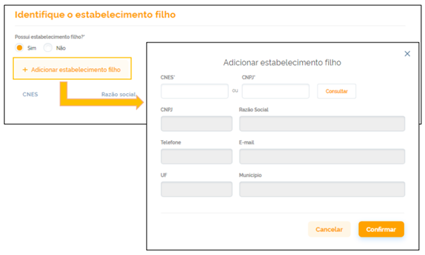

Guia de Implementação do Registro de Regulação Assistencial (RIRA) da RNDS
1.0.0-release - STU1

Guia de Implementação do Registro de Regulação Assistencial (RIRA) da RNDS
1.0.0-release - STU1

Guia de Implementação do Registro de Regulação Assistencial (RIRA) da RNDS - Compilação de desenvolvimento local (v1.0.0-release) construída pelas ferramentas de compilação FHIR (HL7® FHIR® Standard). Veja o Diretório de versões publicadas
| Page standards status: Informative |
A interoperabilidade com a RNDS dar-se-á por meio dos serviços (web services) mencionados anteriormente. Para que seja possível acessar esses serviços disponibilizados no EHR Services é necessário realizar solicitação de acesso no Portal de Serviços do DATASUS.
O processo de credenciamento de um estabelecimento de saúde junto à RNDS é realizado em duas fases. Na primeira o estabelecimento requisita o acesso ao ambiente de homologação. Na segunda, o estabelecimento requisita acesso ao ambiente de produção. Quando esta última é concedida, o estabelecimento está autorizado a trocar informações com a RNDS.
O diagrama abaixo, na notação BPMN, ilustra o fluxo de atividades de credenciamento, distribuídas entre três atores: DATASUS, Gestor e Integrador, conforme Figura 1.
Figura 1 - Diagrama do fluxo de atividades de credenciamento

A solicitação de acesso à RNDS deve ser feita pelo estabelecimento de saúde, seja laboratório, secretaria estadual, hospital, unidade básica de saúde, entre outros. Se o estabelecimento de saúde tiver um provedor de tecnologia, esse provedor pode apoiar no processo de integração. Dessa forma, o provedor de tecnologia entra como um facilitador, pois a solicitação de acesso deverá ser efetuada pelo responsável do estabelecimento a ser conectado à RNDS.
ⓘ NOTA
Vale contextualizar que o parceiro tecnológico (integrador) poderá abrir chamado a equipe técnica do DATASUS por meio do Suporte ao Usuário caso tenha dúvidas nos testes ou algum problema no processo de interoperabilidade.
Inicialmente, é apresentada ao usuário a tela inicial com todos os serviços disponibilizados. O usuário deve identificar e clicar no serviço desejado para solicitar a interoperabilidade. Em seguida, será direcionado à página principal do serviço selecionado, onde encontrará todas as informações necessárias, incluindo material de apoio e canal de suporte. Nessa página, há também um botão denominado “Solicitar Acesso”, que o usuário deve clicar para prosseguir com os próximos passos da interoperabilidade.
Figura 2 - Portal de Serviços do DATASUS

O acesso aos serviços digitais oferecidos pelo governo deve ser autenticado inicialmente pela plataforma gov.br, a qual exige uma conta que qualquer cidadão pode criar pelo portal https://acesso.gov.br/, ilustrado na Figura 3.
Figura 3 - Tela de acesso ao gov.br

O gestor do estabelecimento de saúde deverá criar uma conta gov.br, e caso não possua uma, deverá providenciá-la, pois será necessária para requisitar a solicitação de acesso à RNDS.
O certificado digital é premissa obrigatória para acesso à RNDS, vez que esse é um dos controles mais fortes de segurança utilizado na rede. É necessário o certificado digital do estabelecimento principal. Vale contextualizar que os estabelecimentos que emitem nota fiscal ou acessam algum portal do governo já tem um certificado A1 do tipo e-CNPJ.
No contexto de uso do CPF da pessoa Responsável (solicitante do acesso no Portal de Serviços), vinculada ao estabelecimento, pode ser utilizado o certificado A1 do tipo e-CPF. Os certificados devem ser da cadeia ICP Brasil, pois quando o usuário carregar o seu certificado digital (chave pública “.cer” ou privada “.pfx”) ocorre a captura das informações de CNPJ ou CPF e a validade do certificado.
Em nenhum momento é capturada informação da sua chave privada, ela precisa ser instalada na máquina porque é necessidade do esquema de autenticação “two way ssl”, onde é necessário ter um certificado digital em cada uma das pontas para poder trocar um token (assinado em ambos os lados) garantindo assim uma comunicação segura.
ⓘ NOTA
O certificado ficará associado ao estabelecimento de saúde (ou lista de estabelecimentos de saúde) informado na solicitação de acesso.
Caso a solicitação envolva uma lista de estabelecimentos de saúde, todos deverão ser listados e obrigatoriamente devem ser do mesmo estado (UF).
Figura 4 - Tela de cadastro e identificação de estabelecimentos filhos

O identificador do solicitante é um número fornecido pela RNDS quando a solicitação de acesso à RNDS é aprovada, este número é fundamental para iniciar o processo de Homologação e deve ser encontrado no menu “Gerenciar Credenciais”, conforme a imagem abaixo.
Figura 5 - Tela de gerenciamento de credencial

Este número deve ser sempre empregado na construção da identificação de uma requisição
submetida para a RNDS.